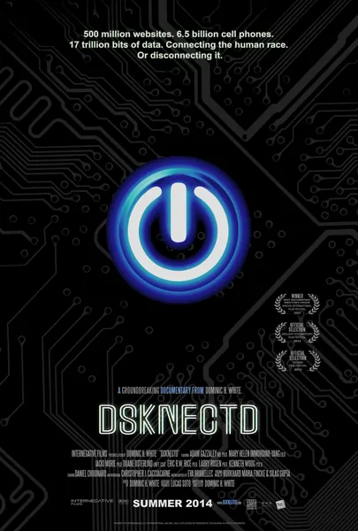

Документальный · 2013 · Документальный
Эксперимент: несколько семей соглашаются полностью отказаться от интернета на две недели. Первые дни приносят раздражительность, затем следуют неожиданные разговоры за ужином и переосмысление того, что в телефоне было полезным инструментом, а что — способом спрятаться от реальности. Параллельно авторы фильма беседуют с нейробиологами и психологами о механизмах зависимости от лайков и уведомлений. Это простое и честное кино о грани между тем, чтобы оставаться на связи, и жизнью внутри чужой ленты новостей.
An experiment: several families agree to go fully offline for two weeks. The first days bring irritability, then unexpected dinner conversations, then a reassessment of what in the phone was a tool and what was a hiding place. Alongside, the film talks to neuroscientists and psychologists about the mechanics of dependence on likes and notifications. A simple, honest film about the border between 'being connected' and 'living inside someone else's feed'.
← Вернуться в каталог IT Movies